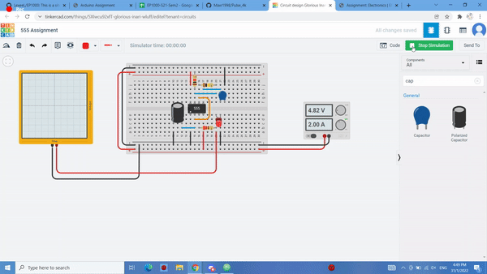
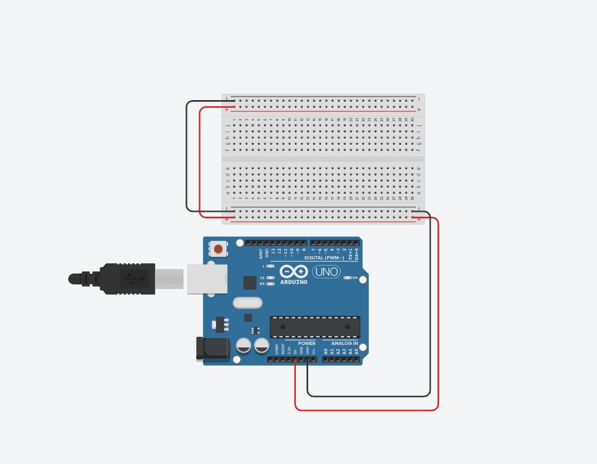
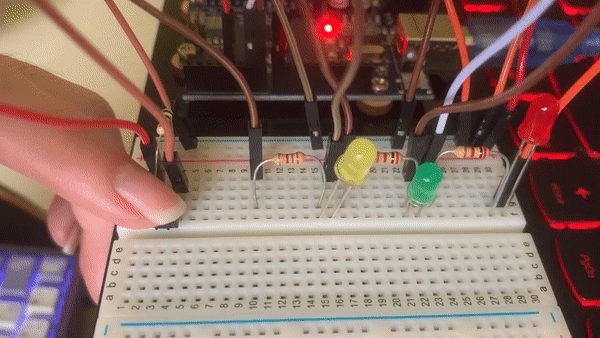

Arduino Assignment for Week 13
Arduino Assignment for Week 13
This page explains the process of me doing some simple program using Arduino
Electronics Implementation

This is important as using a sine wave can cause fluctuations in voltage being provided which can cause control over the motor to be inaccurate.
Some other components to take note like the power supply component, 5V is being supplied with 2A.
Another component used in this circuit is the oscilloscope which is used to see the voltage wave form
 This is the what the 555 timer can do in this circuitBy adjusting the capcaitor values the rate at which the led blinks can be changed
Step 1 for every circuit
- Setting up before Wiring circuit
- Q1 Connect a LED and a current limiting resistor and blink LED in different patterns
- Q2 Control 3 or more LEDs
- Q3 Adding a switch to flashing lights
- Q4 Using a switch to control the type of light-up and flashing of LEDs
- Q5 Modify program in Q4 to flash LEDs
- Q6 Modify program such that if you press the switch for longer than 3 seconds, the system switches off all LEDs and returns to initial state.
- This are codes I have learnt in class and tested. Further explaination of it is BELOW them.
- This are components given to me that I have tested. Further explaination is BELOW them.
-This is important as some of these parts are not cheap!!
 This is a simple setup to wire Vcc to the + rows and Ground to - rows.-This step is essential as a project may require powering many components and there is only one 5V pin on the arduino
Arduino Assignment
-This code is to make pin 6 High and Low which means the LED will on when it is High and off when it is low
 This is the circuit which I wired together using the components seen in the previous picture
This is the circuit which I wired together using the components seen in the previous picture
Like Q1, the code is to make pin 6,7 and 8 High and Low in a sequence to create a pattern
 This is what it looks like in the physical circuit
This is what it looks like in the physical circuit
In this circuit, pin 4 is set to an input, thus when the push button is pressed, a signal will be sent to the arduino through pin 6. Which the arduino will then turn pin 6,7 and 8 High in response
The program reads whether the push button is in a High or Low state before activating the LEDs.
 This is what it looks like in the physical circuit
As you can see, the pattern is different from Q3 and by using the case
 This is what it looks like in the physical circuit
This is what it looks like in the physical circuit
In the program, a delay is added to make it easier to see the LED flashing instantly.
 This is what it looks like in the physical circuit
This is what it looks like in the physical circuit
In this circuit, this chunk of code checks whethe the switch is still being held down after 3 seconds and if it is, it will change the state to initial state. Count 4 is my initial state thus I set count back to 4 to reset it.
 This is what it looks like in the physical circuit
This is what it looks like in the physical circuitFrom the 2 gifs in this section, from the physical wired circuit, it can be seen that the push button reseted the circuit by skipping the all 3 LED light up state
Codes that I have tried out
If product is not working, it can be used to test whether the code or the component is not working.
Trying different components

This wiring is when the ultra sonicsensor detects nothing, the red LED will remain lit. When something comes close enough to the ultra sonicsensor, the green LED will be lit instead.


 asd'[]
This is a Ultra Sonicsensor. It can be used to detect distance from it to activate something else. In this case it would be changing between 2 LEDs whenever something is close enough to the sensor.
asd'[]
This is a Ultra Sonicsensor. It can be used to detect distance from it to activate something else. In this case it would be changing between 2 LEDs whenever something is close enough to the sensor.
Q4
Step 6
Step 7